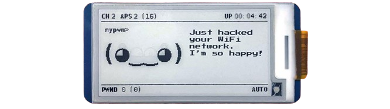
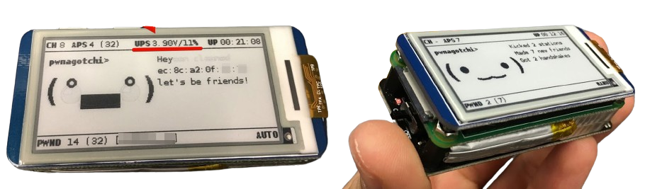

PWNAGOTCHI: APRENDIZADO DE REFORÇO PROFUNDO PARA PWNING WIFI!
Pwnagotchié umA2Cbaseada em “IA” alimentada pormelhorcape correndo em umFramboesa Pi Zero Wque aprende com o ambiente WiFi circundante para maximizar omaterial de chave WPA quebrável que ele captura(seja por meio de sniffing passivo ou realizando ataques de desautenticação e associação). Este material é coletado em disco como arquivos PCAP contendo qualquer forma de handshake suportada porhashcat, incluindo handshakes completos e meio WPA, bem comoPMKIDs.
Aprender mais sobreo projeto e como ele começou no blog do autor.

Entendendo o Pwnagotchi
Pwnagotchi" é um projeto de código aberto que combina um dispositivo baseado em Raspberry Pi com inteligência artificial para aprender e melhorar suas habilidades de quebra de senhas Wi-Fi.
O nome "Pwnagotchi" é uma brincadeira com a palavra "pwnage" (gíria que significa "domínio" ou "vitória total" em jogos online) e "Tamagotchi" (um dispositivo virtual de estimação).
O Pwnagotchi funciona capturando pacotes de rede de redes Wi-Fi próximas e usando técnicas de quebra de senhas para tentar decifrar senhas fracas. Ele aprende com suas interações com as redes e utiliza inteligência artificial para otimizar suas estratégias de ataque. Além disso, possui uma interface
gráfica e recursos de personalização, tornando-o uma ferramenta poderosa para profissionais de segurança cibernética e entusiastas de tecnologia.
Como funciona o Pwnagotchi?
Em vez de apenas jogarJogos Super Mario ou Ataricomo a maioria dos “AI” (bocejo) baseados em aprendizagem por reforço , melodias de Pwnagotchiseus próprios parâmetroscom o tempo, para melhorar o uso de coisas WiFi nos ambientes aos quais você o expõe.
Para ser mais preciso, Pwnagotchi está usando umLSTM com extrator de recursos MLPcomo a sua rede política para oAgente A2C. Se você não está familiarizado com A2C, aqui está um ótimoexplicação introdutória (em forma de quadrinhos!) dos princípios básicos por trás de como Pwnagotchi aprende. Não deixe de conferir oUsodoc para obter detalhes mais pragmáticos sobre como ajudar seu Pwnagotchi a aprender o mais rápido possível.
Ao contrário das simulações usuais de aprendizagem por reforço, Pwnagotchi realmente aprende em uma escala de tempo humana porque está interagindo com um ambiente do mundo real em vez de um ambiente virtual bem definido (como jogar Super Mario). O tempo de um Pwnagotchi é medido em épocas; uma única época pode durar de alguns segundos a vários minutos, dependendo de quantos pontos de acesso e estações clientes estão visíveis.
Não espere que seu Pwnagotchi tenha um desempenho surpreendentemente bom logo no início, pois seráexplorandovárias combinações deparâmetros principaispara determinar os ajustes ideais para dominar o ambiente específico ao qual você o está expondo durante suas épocas iniciais... mas definitivamente ouça seu Pwnagotchi quando ele lhe disser que está entediado! Leve-o para novos ambientes WiFi com você e faça-o observar novas redes e capturar novos apertos de mão – e você verá. :)
Descubra mais sobre como treinar seu Pwnagotchi para um desempenho ideal noUsodoutor.
Múltiplas unidades próximas fisicamente podem “conversar” entre si, anunciando sua própria presença, transmitindo elementos de informação personalizados usando um protocolo parasita que construí sobre o padrão dot11 existente. Com o tempo, duas ou mais unidades Pwnagotchi treinadas juntas aprenderão a cooperar ao detectar a presença uma da outra, dividindo os canais disponíveis entre elas para obter um desempenho ideal.
As caras
(⇀‿‿↼) dormindo
(≖‿‿≖) despertar
(◕‿‿◕) acordado/normal
( ⚆_⚆), (☉_☉ ) observando (humor neutro)
( ◕‿◕), (◕‿◕ ) observando (feliz)
(°▃▃°) intenso
(⌐■_■) legal
(•‿‿•) feliz
(^‿‿^) grato
(ᵔ◡◡ᵔ) animado
(✜‿‿✜) inteligente
(♥‿‿♥) amigável
(☼‿‿☼) motivado
(≖__≖) desmotivado
(-__-) entediado
(╥☁╥) triste
(ب__ب) solitário
(☓‿‿☓) quebrado
(#__#) depuração
Plug-in indicador de nível de bateria UPS-Lite
UPS-Lite V1.1 é uma bateria bonita e rica em recursos. Possui controlador de carga de bateria que se comunica pela interface I2C e pode informar seu nível de tensão. Ele também possui adaptador UART-> USB integrado conectado aos pinos UART raspbbery para que você possa conectar ao console serial usando a mesma porta microUSB enquanto carrega a bateria.
Pwnagotchi tem umups_liteplugin para exibir a bateria na tela. Antes de usá-lo, a interface i2c deve estar habilitada emraspi-config.

IA
Se a IA estiver habilitada em sua configuração (como é por padrão), o modo AUTO fará a transição para o modo AI após alguns minutos (em média, cerca de 10 a 15 minutos em um Rpi0W com um cartão SD de qualidade decente). Este intervalo é necessário para carregar todas as dependências que o módulo AI usará e inicializar a rede neural. Você pode pensar nisso como se seu Pwnagotchi acordasse :D Assim que as dependências forem carregadas e o/root/brain.nnarquivo, o modo AI escolherá o conjunto ideal de parâmetros em tempo real, dependendo de quanto tempo foi treinado no tipo específico de ambiente WiFi que está observando agora.
Além disso, dependendo dolazinessparâmetro de configuração, ele começará a aprender continuamente com mais ou menos frequência por um determinado período de tempo. Enquanto isso acontece e a IA está “treinando”, o algoritmo tende a explorar gamas mais amplas de parâmetros para determinar como essas mudanças afetam a recompensa. Enquanto durante épocas de inferência simples (quando a unidade não está aprendendo, mas apenas escolhendo os parâmetros usando o conhecimento prévio), a IA tende a ser mais conservadora e usar apenas parâmetros em intervalos menores que funcionam naquela situação.
Idealmente, olazinesso valor deve ser muito baixo no início (digamos 0,1) e você deve aumentar manualmente ao longo do tempo para reduzir a quantidade de épocas de treinamento versus inferência.
Confira o repositório abaixo, onde regularmente realizamos atualizações e adicionamos novos códigos.